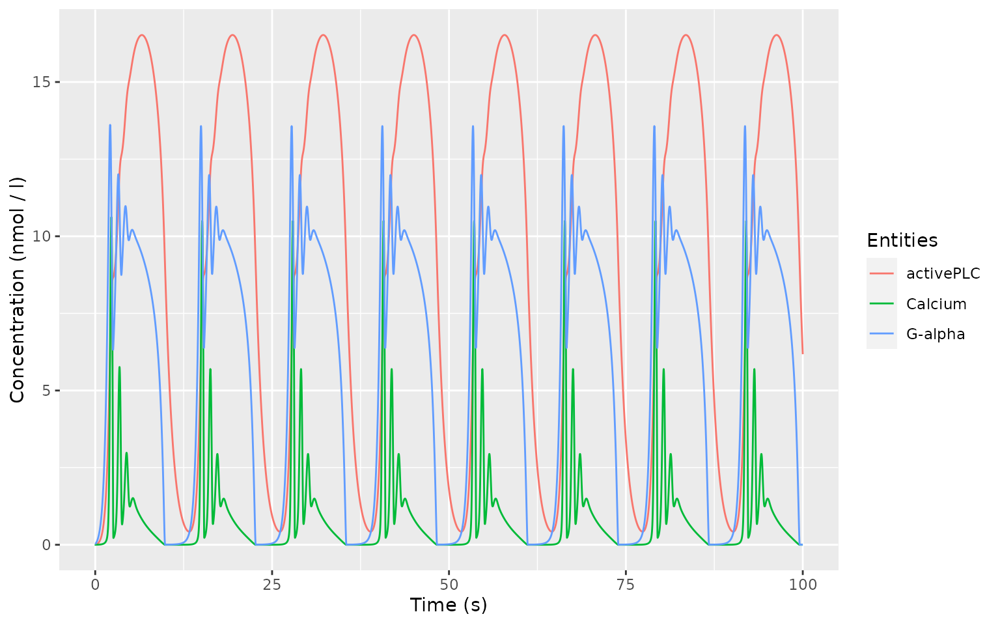

Install the CoRC package directly from GitHub:
install.packages("remotes")
remotes::install_github("jpahle/CoRC")The installation may take a few minutes.
CoRC runs it’s own version of the COPASI backend which it will download for your platform during installation.
In case there is no internet connection, the package can be
downloaded from the (github releases).
Both the package and the correct platform-specific libraries need to be
downloaded. In most cases it’s easiest to just specify the location of
the libraries prior to installation by setting the
COPASI_LIB_PATH environment variable. E.g. for CoRC Version
0.10.0 on windows:
Sys.setenv(COPASI_LIB_PATH = "C:/Users/jonas/Downloads/COPASI_windows_x86_64.dll")
install.packages("C:/Users/jonas/Downloads/CoRC_0.10.0.tar.gz", repos = NULL)To start, load the library.
From this point on, CoRC keeps an instance of COPASI running in the background. This instance can load up as many models as desired.
Initially, no model is loaded.
runTimeCourse()
#> Error: No model currently in use.You can load a model by using one of the model management commands.
newModel()
loadModel(path)
loadModelFromString(model_string)
loadSBML(path)
loadSBMLFromString(sbml_string)
loadExamples()When loading a model, the returned object is a reference to the model that will give basic information when printed.
model <- loadSBML("https://www.ebi.ac.uk/biomodels/model/download/BIOMD0000000329.2?filename=BIOMD0000000329_url.xml")
model
#> # A COPASI model reference:
#> Model name: "Kummer2000 - Oscillations in Calcium Signalling"
#> Number of compartments: 1
#> Number of species: 3
#> Number of reactions: 8This reference can be used with most functions using the
model argument but can also be safely ignored when working
with a single model.
CoRC contains a plethora of functions for working with COPASI models. The most basic ones required for common workflows are used for manipulation of model entities and running tasks.
str(getSpecies())
#> tibble [3 × 13] (S3: tbl_df/tbl/data.frame)
#> $ key : chr [1:3] "G-alpha{compartment}" "activePLC{compartment}" "Calcium{compartment}"
#> $ name : chr [1:3] "G-alpha" "activePLC" "Calcium"
#> $ compartment : chr [1:3] "compartment" "compartment" "compartment"
#> $ type : chr [1:3] "reactions" "reactions" "reactions"
#> $ unit : chr [1:3] "nmol/l" "nmol/l" "nmol/l"
#> $ initial_concentration: num [1:3] 0.01 0.01 0.01
#> $ initial_number : num [1:3] 0.602 0.602 0.602
#> $ concentration : num [1:3] NaN NaN NaN
#> $ number : num [1:3] NaN NaN NaN
#> $ rate : num [1:3] 0 0 0
#> $ number_rate : num [1:3] 0 0 0
#> $ initial_expression : chr [1:3] "" "" ""
#> $ expression : chr [1:3] "" "" ""
setSpecies("G-alpha", initial_concentration = 0.02)
timecourse <- runTimeCourse(duration = 100, intervals = 10000)This enables quick definition of loops, for example to scan through various concentration values of a species.
ga_concentrations <- 1:5
for (ga_conc in ga_concentrations) {
setSpecies("G-alpha", initial_concentration = ga_conc)
ga_state <- getSpecies("G-alpha")
print(paste(
"Current concentration:", ga_state$initial_concentration, ga_state$unit
))
# further commands e.g.:
# runTimecourse()
# saveModel(paste0("ga", ga_value, ".cps"))
}
#> [1] "Current concentration: 1 nmol/l"
#> [1] "Current concentration: 2 nmol/l"
#> [1] "Current concentration: 3 nmol/l"
#> [1] "Current concentration: 4 nmol/l"
#> [1] "Current concentration: 5 nmol/l"Data generated by CoRC is returned as common R structures such as
lists, data frames and matrices. Data frames are wrapped in an
equivalent structure called a tibble
which behaves identical in most circumstances but gives a reasonable
overview when printing.
timecourse$result
#> # A tibble: 10,001 × 4
#> Time `G-alpha` activePLC Calcium
#> <dbl> <dbl> <dbl> <dbl>
#> 1 0 0.02 0.01 0.01
#> 2 0.01 0.0227 0.0102 0.000320
#> 3 0.02 0.0255 0.0103 0.000359
#> 4 0.03 0.0284 0.0106 0.000400
#> 5 0.04 0.0314 0.0108 0.000442
#> 6 0.05 0.0344 0.0111 0.000486
#> 7 0.06 0.0376 0.0114 0.000530
#> 8 0.07 0.0408 0.0118 0.000576
#> 9 0.08 0.0441 0.0122 0.000624
#> 10 0.09 0.0475 0.0126 0.000672
#> # … with 9,991 more rowsIt is encouraged to use the ggplot2
package for generating publication-ready plots from CoRC data. The
helper function autoplot.copasi_ts can be used to quickly
print timecourse data.
# library(ggplot2)
autoplot.copasi_ts(timecourse)
Finally, a model can be saved via several model management commands.
saveModel(filename)
saveModelToString()
saveSBML(path, level = 3, version = 1)
saveSBMLToString()To free up memory, unload any loaded models or restart R.
unloadModel(model)
unloadAllModels()Information regarding different aspects of CoRC and simple examples can be found in the articles on model entity management, task management and model building on the CoRC website. More sophisticated examples and case-studies illustrating further benefits of using CoRC can be found in the examples article.